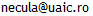
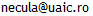

 +40 232 201 209
+40 232 201 209Conf. dr. Mihai Necula
Elemente de analiză complexă şi aplicaţii (în Python)
Anul II, Matematică-informatică, 2024-2025, sem. II.
- Cursul 1 : Corpul numerelor complexe
- Manuale: Algebră IX, Geometrie X
- Tutorial: Formula lui Cardano
- Temă: Ecuaţia de gradul al doilea
- Tutorial: Utilizare PyCharm
- Laborator 1: Numere complexe în Python
- Cursul 2 : Clase Python pentru grafică 2D
- Tutorial: Dicţionar Python C++
- Temă: Curbe plane
- Laborator 2: Proiectul PythonSablon.py
- Cursul 3 : Planul complex
- Tutorial: Desenare pixel cu pixel
- Temă: Despre distanţe
- Laborator 3: Transformări geometrice
- Cursul 4 : Topologia numerelor complexe
- Tutorial: Intersecţia a două drepte
- Desene: Taijitu
- Temă: Despre unghiuri
- Laborator 4: Seria geometrică
- Cursul 5 : Funcţii olomorfe
- Tutorial: Punctul Fermat-Torricelli
- Link: The Fermat Point and Generalizations
- Desene: Cercuri tangente
- Temă: Segmente şi rapoarte scalare
- Laborator 5: Transformări conforme
- Cursul 6 : Integrala complexă
- Tutorial: Cercul celor nouă puncte
- Temă: Triunghiuri şi rapoarte complexe
- Laborator 6: Integrala
- Cursul 7 : Formula integrală a lui Cauchy
- Tutorial: Coordonate baricentrice
- Temă: Puncte importante în triunghi
- Laborator 7: Formula lui Cauchy
- Cursul 8 : Funcţii analitice
- Desene: Artizanat. O rezolvare
- Temă: Poligoane regulate
- Laborator 8: Funcţia exponenţială
- Cursul 9 : Teorema reziduurilor
- Tutorial: Spirala logaritmică
- Desene: Tablou 3D. O rezolvare
- Temă: Pseudospirale
- Laborator 9: Reziduuri
- Cursul 10 : Curbe remarcabile (1)
- Desene: Covorul lui Papi. O rezolvare
- Tutorial: Liste în Python
- Gif: Copac în vânt
- Temă: Metoda motivelor iterate
- Laborator 10: Curba lui Koch
- Cursul 11 : Curbe remarcabile (2)
- Desene: O floare.
- Link: Curba lui Lebesgue
- YouTube: Pisica lui Hilbert
- Temă: Metoda transformărilor iterate
- Laborator 11: Curba lui Hilbert
- Cursul 12 : Şiruri recurente în planul complex
- YouTube: Classic Newton Fractal
- Temă: Metoda lui Newton în complex
- Laborator 12: Metoda lui Newton
- Cursul 13 : Mulţimi Julia
- Link: Pierre Fatou
- Desene: Un triunghi imposibil
- Temă: Mulţimi Fatou
- Laborator 13: Mulţimi Julia/Fatou
- Cursul 14 : Mulţimea lui Mandelbrot
- YouTube: O excursie prin mulţimea lui Mandelbrot
- Temă: Mulţimea lui Mandelbrot generalizată
- Laborator 14: Proiectul Mandelbrot
Fundamentele programării
Anul I, 2022-2023, sem. I.
- Album foto nr. 1 >> Al-Khwarizmi >> Algoritm
- Cursul 1: Introducere. Bibliografie
- Laborator: Exemple. Rezolvări
- Tutorial: Utilizarea mediului de programare Microsoft Visual Studio
- Link: TIOBE Index
- Temă: Editarea şi rularea programelor
- Album foto nr. 2 >> Dennis Ritchie >> Limbajul C
- Cursul 2: Generalitati. Evoluţia limbajelor de programare.
- Wiki: Scrierea hexazecimală a numerelor
- Memo: Prefixe binare
- Resurse web: Intel 64 and IA-32 Architectures Software Developer's Manuals
- Tutorial: Utilizare Debugger
- Temă: Baze de numeraţie
- Album foto nr. 3 >> Bjarne Stroustrup >> Limbajul C++
- Cursul 3 : Limbajul C în două ore
- YouTube: "Hello World!" 2008 / 2010 / 2012 / 2013 / 2015 / 2017 / 2019
- Temă: Sume şi produse
- Album foto nr. 4 >> Anders Hejlsberg >> Limbajul C#
- Cursul 4 : Noţiuni de bază (I)
- Memo: Alocarea tipurilor aritmetice în MS Visual C++
- Web tutorial: Variables and data types in C/C++
- Temă: Tipuri aritmetice
- Album foto nr. 5 >> Niklaus Wirth >> Limbajul Pascal >> Limbajul Delphi
- Cursul 5 : Noţiuni de bază (II)
- Doc: American Standard Code for Information Interchange
- Link: What is Unicode?
- Lab: Program ilustrativ
- Temă: Literali
- Album foto nr. 6 >> Grace Hopper >> Limbajul COBOL
- Cursul 6 : Expresii în C/C++ ()
- Tutorial: Schema lui Horner
- Memo: Operatorii limbajului C
- Test: Ambiguitate
- Temă: Prelucrări de stringuri
- Album foto nr. 7 >> John Backus >> Limbajul FORTRAN
- Cursul 7 : Expresii în C/C++ ( )
- Web tutorial: Operatorii limbajului C++
- Temă: Expresii
- Album foto nr. 8 >> Alan Turing >> Informatica teoretică
- Cursul 8 : Expresii în C/C++ ( )
- Link: Mulţimea lui Mandelbrot
- Temă: Funcţii de decizie
- Album foto nr. 9 >> Noam Chomsky >> Limbaje formale
- Cursul 9 : Instrucţiuni ()
- Memo: Instrucţiuni C/C++
- Temă: Iteraţii
- Album foto nr. 10 >> Donald Knuth >> Arta programării calculatoarelor
- Cursul 10 : Instrucţiuni ( )
- Web tutorial: Instrucţiunile limbajului C
- Temă: Transformări de tablouri
- Album foto nr. 11 >> Charles Babbage >> Conceptul de calculator programabil
- Cursul 11 : Tipuri utilizator
- Web tutorial: Structures in C
- Temă: Structuri
- Album foto nr. 12 >> John von Neumann >> Arhitectura calculatoarelor
- Cursul 12 : Pointeri şi referinţe
- Animal Planet: the English Pointer
- Temă: Pointeri către funcţii
- Album foto nr. 13 >> Claude Shannon >> Teoria informaţiei
- Cursul 13 : Operaţii de intrare/ieşire în C++
- Web tutorial: C++ Stream IO & File IO
- Album foto nr. 14 >> Vinton Cerf >> Apariţia internetului
- Cursul 14: Scrierea formatată a datelor
- Web tutorial: Input/output manipulators
- Licenţă: Model de subiect
Ecuaţii diferenţiale
Anul II, Matematică-informatică, 2022-2023, sem. I.
- Note de curs: Ecuaţii diferenţiale
- Cursul 1: Introducere
- Tutorial: Curbe în plan
- Tema 1: Grafice de funcţii
- Cursul 2: Ecuaţii rezolvabile prin cuadraturi (1)
- Tutorial: Derivarea şi integrarea, operaţii inverse
- Manual: Analiză matematică, clasa a XI-a
- Tema 2: Exerciţii de derivare
- Cursul 3: Ecuaţii rezolvabile prin cuadraturi (2)
- Tutorial: Funcţia exponenţială
- Manual: Analiză matematică, clasa a XII-a
- Tema 3: Ecuaţii cu variabile separabile
- Cursul 4: Existenţă şi unicitate locală
- Tutorial: Funcţiile circulare sinus şi cosinus
- Tema 4: Ecuaţii omogene
- Cursul 5: Existenţă şi unicitate globală
- Tutorial: Principiul contracţiilor
- Tema 5: Ecuaţii liniare de ordinul întâi
- Cursul 6: Sisteme diferenţiale liniare. Cazul general
- Tutorial: Convergenţa uniformă a şirurilor de funcţii
- Tema 6: Ecuaţii Riccati
- Cursul 7: Sisteme diferenţiale liniare cu coeficienţi constanţi
- Tutorial: Funcţia exponenţială în corpul numerelor complexe
- Tema 7: Metoda parametrului
- Cursul 8: Determinarea funcţiei exponenţiale matriceale
- Tutorial: Forma canonică Jordan
- Tema 8: Exerciţii
- Cursul 9: Ecuaţii diferenţiale liniare cu coeficienţi constanţi
- Tutorial: Soluţii analitice pentru sisteme diferenţiale liniare
- Tema 9: Existenţă globală
- Cursul 10: Teoria stabilităţii (1)
- Tutorial: Stabilitatea ecuaţiei diferenţiale liniare de ordinul întâi
- Tema 10: Ecuaţii diferenţiale liniare cu coeficienţi constanţi
- Cursul 11: Teoria stabilităţii (2)
- Tutorial: Pendulul matematic
- Tema 11: Sisteme diferenţiale liniare cu coeficienţi constanţi
- Cursul 12: Integrale prime
- Tutorial: Ecuaţii funcţionale
- Tema 12: Teoria stabilităţii
- Cursul 13: Ecuaţii cu derivate parţiale de ordinul întâi
- Tutorial: Ecuaţia legii de conservare
- Tema 13: Integrale prime
- Cursul 14: Modele matematice descrise prin ecuaţii diferenţiale
- Tutorial: Integrale reductibile la integrale raţionale
- Examen: Subiecte teoretice
- Tema 14: Ecuaţii cu derivate parţiale de ordinul întâi